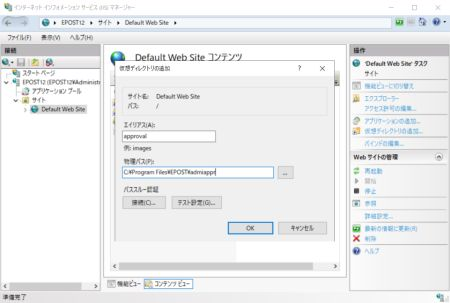
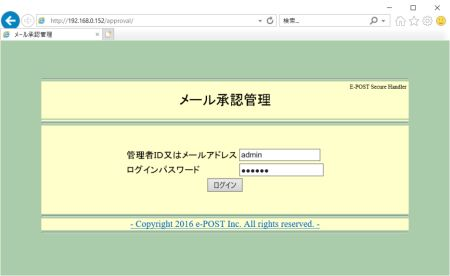
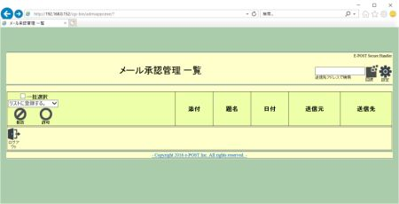
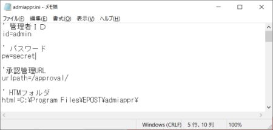

E-Post Secure Handler (x64) のWeb管理「メール承認管理」を設定する
E-Post Secure Handler (x64) の Web管理「メール承認管理」を設定するには、インストールするサーバに既に組み込まれている E-Post Mail Server (x64) シリーズか E-Post SMTP Server (x64) シリーズの Web管理ツールを先に設定しておくことをお薦めします。以下のページを参考にして設定をすませてください。
●Windows Server 2012 R2 / 2016 / 2019 / 2022 / 2025 のIISでWeb管理を設定するときの補足・修正事項
---（以下は上記設定が完了した後に設定してください。）---
仮想ディレクトリ"approval"を追加、割り当てる物理パスとして64bit版 E-Post Secure Handler (x64)版では、"C:\Program Files\EPOST\admiappr"を指定します。このフォルダ階層下にはhtmlファイル群が格納されています。
仮想ディレクトリ"approval"が作成できたら、"cgi-bin"実フォルダ（"C:\Program Files\EPOST\cgi-bin"）下にある"epst-manager.ini"ファイルの内容を確認し、必要な場合は修正します。

▲仮想ディレクトリ"approval"を同様の手順で追加
※仮想ディレクトリ"cgi-bin"の下に作成されないよう注意
「メール承認管理」CGIプログラムはデフォルトでは、"C:\Program Files\EPOST\cgi-bin"にインストールされます。
CGI実行権限には "admiappr.exe" が格納されている "cgi-bin" フォルダに対してインターネットゲストアカウント（IUSR）について“フルコントロール”のアクセス許可権限が設定されている必要があります。

▲最後にブラウザを起動し "http://[IPアドレス]/approval/" または
"http://localhost/approval/" に接続すると
「メール承認管理」ログイン画面が表示される。
デフォルトの管理者であるadminパスワードは'secret'で設定
管理者ＩＤまたはメールアドレス：admin
ログインパスワード：secret
「メール承認管理」ログイン後に E-Post Secure Handler の「メール承認管理一覧」画面が開きます。

▲「メール承認管理」ログイン後の初期画面
なお、必要に応じて管理者ＩＤやパスワードを変更する場合は、"admiappr.ini"ファイル内の以下の部分を変更するようにしてください。
'----- admiappr.ini ----
' 管理者ＩＤ
id=admin
' パスワード
pw=secret
'-----------------------

▲管理者ＩＤやパスワードを変更する場合は"admiappr.ini"ファイルを編集
なお、設定を変更したり、設定されているフォルダ位置を移動する場合は、"cgi-bin" フォルダに含まれる以下3つのファイルをセットにして移動します。
admiappr.exe
admiappr.ini
securehandler.bat
{kind=link}
{kind=link}
{kind=link}
{kind=link}